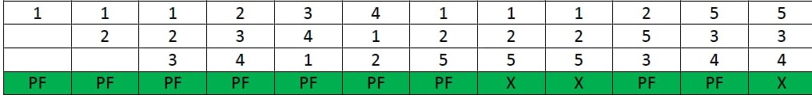
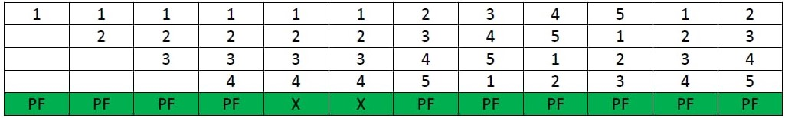

First in First out(FIFO):-
Examle 1:
Consider page reference string 1, 3, 0, 3, 5, 6 with 3 page frames.Find number of page
faults.
solution:

- Initially all slots are empty, so when 1, 3, 0 came they are allocated to the empty
- slots —> 3 Page Faults.
- when 3 comes, it is already in memory so —> 0 Page Faults.
- Then 5 comes, it is not available in memory so it replaces the oldest page slot i.e 1. —>1 Page Fault.
- 6 comes, it is also not available in memory so it replaces the oldest page slot i.e 3 —>1 Page Fault.
- Finally when 3 come it is not avilable so it replaces 0 1 page fault.
Case 1: frames = 3

Case 2: frames = 4

Advantages
- It is simple and easy to understand & implement.
Disadvantages
- The process effectiveness is low.
- When we increase the number of frames while using FIFO, we are giving more memory to processes. So, page fault should decrease, but here the page faults are increasing. This problem is called as Belady’s Anomaly.
- Every frame needs to be taken account off.